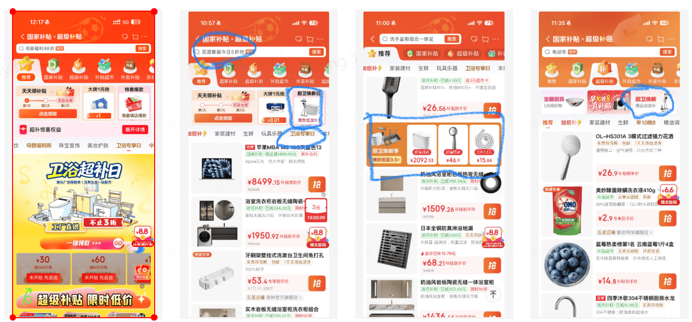
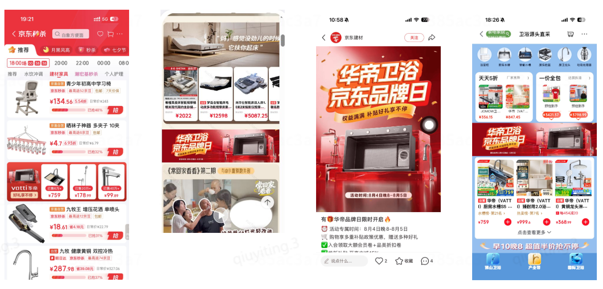
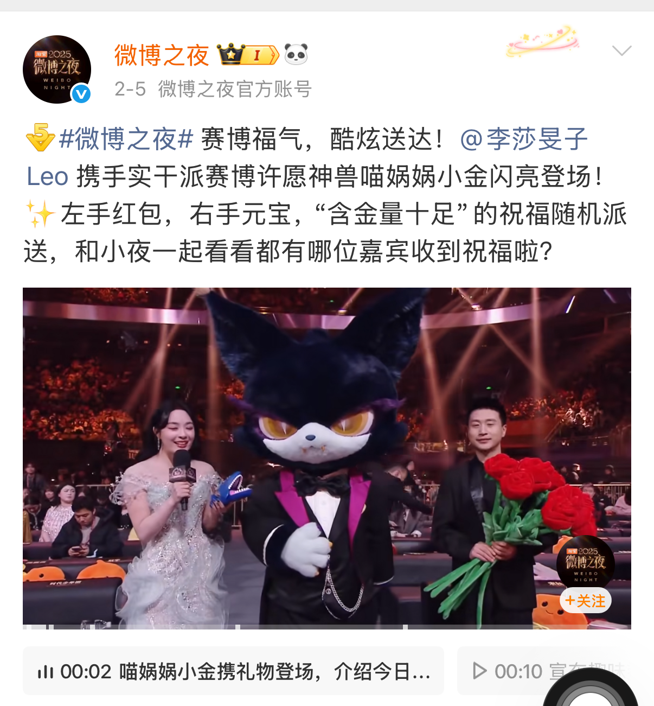

从用户出发
用户画像、客群分层、消费痛点与内容偏好分析。
从用户需求出发，
用数据推动更好的体验。
北京林业大学农村发展专业在读，工商管理本科背景。
在京东、新浪微博、作业帮与生态环境部环境规划院的实习中，
积累用户运营、营销策划、政策分析和数据分析经验，求职意向为营销、运营、市场。
在实践中，逐步形成对用户、业务与市场的理解。
我的经历横跨电商营销、内容社区、教育服务与政策分析。不同场景中的实践，让我持续关注用户为什么行动、业务如何增长，以及数据能够揭示哪些改进机会。
我的求职方向为营销、运营、市场。我希望把已经积累的用户分层、数据归因、资源协同与复盘能力，应用于营销策划、用户运营和市场分析。
用户画像、客群分层、消费痛点与内容偏好分析。
指标监测、行为归因、转化漏斗与运营周报。
活动策划、资源整合、标准化SOP与复盘迭代。
管理学的基础，结合社会调查与研究训练。
以真实业务场景，积累营销、运营与市场分析能力。
中心化频道运营与增长策略
针对超补频道流量成交下滑、秒杀频道流量转化效率偏低的问题，负责超补和秒杀频道日常运营，重构商品排期、商家提报及资源共建机制，持续优化优质货盘供给。推动超补在线商品数同比+110%，成交金额同比+31%；秒杀成交用户数增长277.02%，商详UV转化率提升1.79pp，成交金额同比+62%。
重点营销项目策划与资源协同
针对超补频道新客及商品动销不足的问题，主导策划并落地“715-716超补共建日”，从用户定向圈选、TOP500SKU货盘组织到会场视觉搭建完成“人货场”一体化运营，并联动频道及商家资源扩大曝光。活动实现成交金额同比+42.57%，商详UV同比+71.71%，在线商品数同比+39.51%。
品牌日整合营销与资源沉淀
独立策划勒臣、娜拉之夏、家韵等宝藏品牌日，并协同商家、部门营销及营销BP完成资源整合、活动上线与复盘；进一步搭建产业带卫浴专属品牌日资源包及商家广告规则，降低活动复制成本。最终实现家韵品牌日成交金额同比+308.25%，勒臣同比+192.32%；华帝新锐品牌日成交金额同比+325.27%。
创作者生态建设与分层运营策略
负责剧综领域200名创作者生态搭建与供给侧分层运营，参与策划并落地“中小博主扶持计划”，成功建立176名博主的深度联结。通过提供内容选题、流量扶持及资源配置的标准化SOP，有效提升了创作者矩阵的产出活跃度与优质内容率，实现了高价值用户留存与社区内容生态的良性循环。
S级项目全周期运营与策略执行
深度参与“2025微博之夜”S级项目，主导“喵娲娲”IP的全周期运营策略执行与内容全品类宣发。通过联动博主矩阵助推话题发酵，实现IP3次登顶微博热搜并超额50%完成KPI，在大幅提升IP全网曝光度的同时，通过策略优化有效拉动了剧综板块的用户互动转化与内容消费深度。
数据驱动的运营洞察与产品反馈
构建剧综运营核心指标监测体系，利用Excel进行多维数据清洗与用户行为归因分析，产出10份高质量运营周报并实现全流程0失误。基于数据洞察精准发现用户消费痛点，针对性提出产品功能优化建议与算法迭代思路，实现了从运营实践到产品策略优化的闭环反馈。
用户整体运营与转化SOP搭建
负责学生及家长群体日常运营及销售规划，挖掘客群需求、构建精准用户画像，针对价格敏感、效果质疑等痛点，主导制定单品推广、社群触达等标准化运营SOP，实现95%咨询转化率、99%客户满意度，提升产品与客群需求匹配度。
存量客群分层运营
主导1000+存量客群标签化管理，按付费能力、购买意向等分层，搭建运营8个高活跃客户社群，通过限时折扣等手段激活客群，稳定70%社群互动率，优化转化漏斗，缩短决策周期。
业绩达成与策略优化
以GMV增长为核心，累计达成GMV57万元，连续2个月超额完成指标，位列全国高三业务部TOP30%；建立售后反馈及客户服务体系，联动推广复盘优化策略，对接主讲老师，实现0%退课率。
竞品调研与市场定位策略
建立了多维度的竞品监测与分析框架，针对同赛道头部账号的内容架构、发布策略及用户交互节点进行深度拆解。输出竞品分析报告，建立爆款内容库并提炼底层逻辑，从而精准定义个人账号的内容定位与差异化竞争策略，实现从0到1的内容产品打磨。
用户导向的内容设计与全生命周期管理
负责内容“产品”从用户画像匹配、选题策划、脚本撰写到视觉呈现的全链路闭环。通过追踪全网热点趋势与用户情绪价值点，利用醒图、剪映、豆包、PS等工具等对内容进行极致化包装；通过测试不同内容模块的转化效果，动态优化内容产出质量，确保内容迭代高度符合目标用户的消费偏好。
数据驱动的增长转化与复盘迭代
坚持数据驱动的运营思路，通过监测完播率、互动率及转化漏斗等核心指标，驱动内容策略持续优化。目前累计实现130万全网曝光，产出4条单条播放超60万的现象级爆款，积累点赞收藏4.9万。通过对高热度视频的归因分析，成功沉淀出一套可复制的内容增长模型，实现了账号影响力的稳健提升。
撰写报告
主导某大型港口集团项目大纲撰写，运用ChatGPT、Gemini等AI工具，检索分析国内外50+份政策文件及行业动态，输出3万字资料汇编，大纲获项目组高度认可。
收集数据
参与中西部环境污染与政策实施效果调研，独立完成2000+条核心数据采集整理，运用Excel数据透视表、VLOOKUP函数及可视化工具，制作12份分析图表，为政策评估提供关键数据支撑。
团队协作
协助团队搭建政策信息库，分类整理100+份行业报告，提升团队资料检索效率40%。
从既有经历中展开，呈现问题、行动与结果。

查看活动素材 ↗针对新客及商品动销不足，从用户定向圈选、TOP500 SKU货盘组织到会场视觉搭建，完成“人货场”一体化运营。

查看活动素材 ↗独立策划勒臣、娜拉之夏、家韵等宝藏品牌日，协同完成资源整合、上线与复盘，搭建产业带卫浴专属品牌日资源包及商家广告规则。

查看项目原图 ↗深度参与S级项目，主导“喵娲娲”IP全周期运营策略执行与内容全品类宣发，联动博主矩阵助推话题发酵。
学习与校园实践中的积累。
让分析、表达与协作更高效。
精通Excel（数据透视表、VLOOKUP函数、可视化图表）、Word、PPT；能熟练运用PS进行基础设计
精通ChatGPT、Gemini、DeepSeek等AI工具进行资料检索和应用，使用stata进行数据分析
英语四六级证书、普通话二甲证书、初级财务会计证书、高中数学教师资格证、计算机二级等级证书、中国国际大学生创新大赛河南省二等奖、C1驾驶证